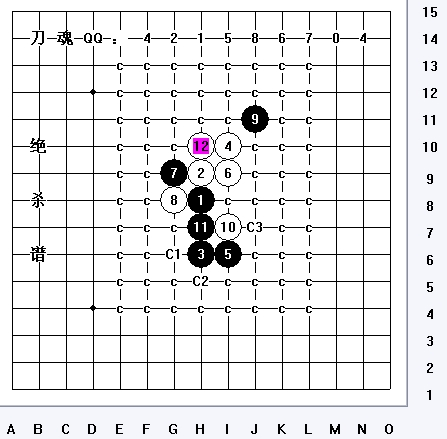
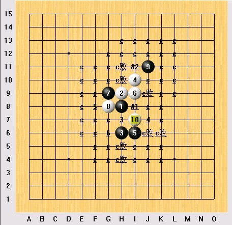
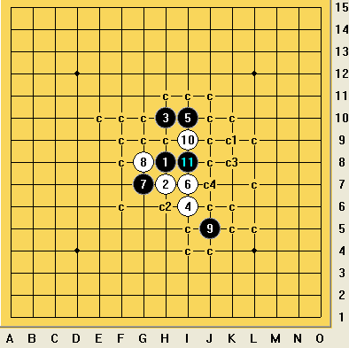

瑞星黑11手是否败点
#1 瑞星黑11手是否败点 作者：逍遥一哼 发表时间：2009-10-16 9:03:23
=======上图对应的爱五子棋谱代码如下，以便你拆解：========
h8h9h6i10i6i9g9g8j11i7h7
======================================================
［ 逍遥一梦 于 2009-10-26 19:05:03 时奖励此帖[金币加 20 威望加1］
［ 逍遥一梦 于 2009-10-26 19:06:03 时花20金币送鲜花一朵］
#2 Re:瑞星黑11手是否败点 作者：大侠 发表时间：2009-10-16 18:54:42
这个11多年前我在上海名人赛上好像见过，那个日本的谁谁谁（名字我忘了），就下这个11给挂了。［ 逍遥一梦 于 2009-10-26 19:05:43 时花20金币送鲜花一朵］
#3 Re:瑞星黑11手是否败点 作者：裁决殿雪月 发表时间：2009-10-16 20:28:57
可战
#4 Re:瑞星黑11手是否败点 作者：逍遥一梦 发表时间：2009-10-26 19:11:56
貌似曾经也是平衡点，现在被拿下成败点了？
#5 Re:瑞星黑11手是否败点 作者：顽童 发表时间：2009-10-26 19:51:26
看高手过招这１１应该是败招．#6 Re:瑞星黑11手是否败点 作者：刀魂 发表时间：2009-10-27 8:45:48
绝对意义上的 平衡点#7 Re:瑞星黑11手是否败点 作者：lfc 发表时间：2009-10-28 8:48:53
刀魂不要在误人子弟了，地毯你要吗！你以为黑石可以算出来！我们打20个威望的赌你敢吗！我拿出地毯，扣你20威望！我感觉你真是太恶心了！#8 Re:瑞星黑11手是否败点 作者：lfc 发表时间：2009-10-28 8:55:09
刀魂，帮帮忙，希望你不懂就不要装成大师，在这个论坛里面90%心里都知道你的底细！何必啊，看到你的言论就像早茶吃到了苍蝇。你不语的羞耻吗！我看到你是在线的，出来吧！别躲在屏幕后面抠鼻屎了！拿出一点样子来，跟我打这个赌，20个威望！
#9 Re:Re:瑞星黑11手是否败点 作者：刀魂 发表时间：2009-10-28 9:33:52
引用：
原文由 lfc 发表于 2009-10-28 8:55:09 :刀魂，帮帮忙，希望你不懂就不要装成大师，在这个论坛里面90%心里都知道你的底细！何必啊，看到你的言论就像早茶吃到了苍蝇。你不语的羞耻吗！我看到你是在线的，出来吧！别躲在屏幕后面抠鼻屎了！拿出一点样子来，跟我打这个赌，20个威望！
不想对你作任何评价，只感觉你就是 一坨 XXX

我说平衡时故意的，是要让一些不会杀这个11的爱好者，可以自己充分的去理解，这样才能体会到连珠的真谛，而不是每次都想着让别人来杀
#10 Re:Re:瑞星黑11手是否败点 作者：逍遥一哼 发表时间：2009-10-28 9:35:24
这个11手有地毯吗，能否出来看下。谢谢。
#11 Re:Re:Re:瑞星黑11手是否败点 作者：刀魂 发表时间：2009-10-28 9:39:33
引用：
原文由 逍遥一哼 发表于 2009-10-28 9:35:24 :这个11手有地毯吗，能否出来看下。谢谢。
自己研究一下子吧，很容易地毯的：
这个谱，已经给出了最强白12（绝杀点），后面就很容易杀干净了
#12 Re:瑞星黑11手是否败点 作者：鬼冢弹间 发表时间：2009-10-28 13:45:47
别误人子弟了， 那么多年都没杀 你给个点就杀了？#13 Re:Re:瑞星黑11手是否败点 作者：刀魂 发表时间：2009-10-28 17:25:11
引用：
原文由 鬼冢弹间 发表于 2009-10-28 13:45:47 :
别误人子弟了， 那么多年都没杀 你给个点就杀了？3年前，我就地毯了这个败11了，不信你可以看看是不是地毯。。。
#14 Re:瑞星黑11手是否败点 作者：游戏人间 发表时间：2009-10-28 18:13:21
这个12是黑大优的吧。。。
=======上图对应的爱五子棋谱代码如下，以便你拆解：========
h8h9h6i10i6i9g9g8j11i7h7h10g6f6i8f7e6f5f4
======================================================
这个通型12团
=======上图对应的爱五子棋谱代码如下，以便你拆解：========
h8h9h6i10i6i9g9g8j11i7h7h10g6i8i11f6h5h4f7i4j7g4j4j6i5g7j10
======================================================
这个黑必胜了吧
=======上图对应的爱五子棋谱代码如下，以便你拆解：========
h8h9h6i10i6i9g9g8j11i7h7h10g6i8i11f6h5h4f7i4j7g4j4j6i5k3j10
======================================================
反挡方法一样
=======上图对应的爱五子棋谱代码如下，以便你拆解：========
h8h9h6i10i6i9g9g8j11i7h7h10g6i8i11f7e6f6g10
======================================================
这个黑完全控盘的
大概摆了几个不知道刀魂大师说的白必胜在哪里。请指教。。。。
#15 Re:瑞星黑11手是否败点 作者：鬼冢弹间 发表时间：2009-10-29 2:41:54
3年前你还没下棋巴 刀魂大师#16 Re:瑞星黑11手是否败点 作者：大侠 发表时间：2009-10-29 8:56:43
我笑～不解释。。。。#17 Re:瑞星黑11手是否败点 作者：刀魂 发表时间：2009-10-29 9:41:07
哥我说地毯，那就必定地毯了
#18 Re:瑞星黑11手是否败点 作者：鬼冢弹间 发表时间：2009-10-29 11:42:25
ZTM SB#19 Re:瑞星黑11手是否败点 作者：忧郁的双眼 发表时间：2009-10-30 12:44:01
我嬲 什么东西#20 Re:瑞星黑11手是否败点 作者：苯酚 发表时间：2009-12-7 16:06:56
=======上图对应的爱五子棋谱代码如下，以便你拆解：========
h8h9h6i10i6i9g9g8j11i7h7j7
======================================================
这个12可行吗？
#21 Re:瑞星黑11手是否败点 作者：极地剑客 发表时间：2009-12-8 1:52:09
楼上妹妹加油#22 Re:瑞星黑11手是否败点 作者：苯酚 发表时间：2009-12-8 6:54:09
 ，我的08
，我的08
#23 Re:瑞星黑11手是否败点 作者：松痕 发表时间：2009-12-8 15:47:06
总有人捣刀魂的场子.#24 Re:Re:瑞星黑11手是否败点 作者：雾都少帅 发表时间：2009-12-8 22:25:04
这个11我谱上标上第3个11 1最强 4 5 6 这3个11都还没解决呢

不知道刀魂解决没有
#25 Re:瑞星黑11手是否败点 作者：wd1988 发表时间：2009-12-9 9:19:33
无敌大师都出来澄清了，绝对不解释，也不需要解释。3年前刀魂大师就已经地毯了这个12，那还轮得到无敌大师拿世界冠军，应该是刀魂大师才对。
我怀疑他是用3分钟的时间地毯的，我也可以，地毯整个瑞星二打只需要5分钟而已：

我五年前就地毯了，牛吧。。。
#26 Re:瑞星黑11手是否败点 作者：没事摆石子玩 发表时间：2009-12-9 11:04:12
刀魂也就才下一年多的新手吧，说话也不脸红。#27 Re:瑞星黑11手是否败点 作者：岑小鱼 发表时间：2009-12-9 12:33:57
天气冷 拿出地毯才是王道#28 Re:瑞星黑11手是否败点 作者：≈★诚心★≈ 发表时间：2010-2-24 11:17:39
哈哈 太有意思了#29 Re:瑞星黑11手是否败点 作者：张轶峰 发表时间：2010-2-24 20:08:38
。。。。。我被误导来误导去，像坐船一样#30 Re:Re:瑞星黑11手是否败点 作者：方圆之外 发表时间：2010-2-26 1:55:19
引用：
原文由 wd1988 发表于 2009-12-9 9:19:33 :无敌大师都出来澄清了，绝对不解释，也不需要解释。3年前刀魂大师就已经地毯了这个12，那还轮得到无敌大师拿世界冠军，应该是刀魂大师才对。
我怀疑他是用3分钟的时间地毯的，我也可以，地毯整个瑞星二打只需要5分钟而已：
我五年前就地毯了，牛吧。。。
呵呵。绝对经典~
#31 Re:瑞星黑11手是否败点 作者：虎哥 发表时间：2010-3-1 23:20:57
膜拜了，嘻嘻哈哈老师
#32 Re:瑞星黑11手是否败点 作者：第五象限 发表时间：2010-4-4 13:52:10
白走H5或G6会怎样变化？
求教
#33 Re:瑞星黑11手是否败点 作者：七步诗 发表时间：2010-4-5 17:53:12
能否让我们学习下呢？刀魂大师？
#34 Re:瑞星黑11手是否败点 作者：水木泡泡 发表时间：2010-4-23 14:02:07
阿弥陀佛
［此帖子已被 水木泡泡 在 2010-4-23 15:30:13 编辑过］